PLAYING CARDS: ENGINEERING AND MECHANICS
Collection History
The engineering collection grew from the holdings of the Astor Library, which focused on practical knowledge and included a significant number of useful works such as trade catalogs and business journals not collected by academic institutions. After the creation of The New York Public Library in 1895, the Astor holding provided the core for continuing contemporary acquisitions of new titles in each of the major divisions of the engineering discipline including civil engineering, mechanical engineering and electrical engineering.
A major gift to NYPL was the collection of William Barclay Parsons who served on the Board of the Library from 1911 until his death in 1932. General Parsons was also the chief engineer of the New York City subway system and a great many volumes in the collection deal with civil engineering projects and transportation engineering, dating from the 15th to the 20th century. In addition, the Parsons collection contains a significant number of volumes relating to military engineering projects during World War 1 when General Parsons served as a senior army engineer.
Data Collection
Each of these engraved cards is illustrated with geometrical figures, diagrams, graphs, or engineering instruments (backs are plain). These playing cards were acquired as part of the William Barclay Parsons collection. Parsons served on the Library's Board of Trustees, but was also chief engineer of the New York City subway system. He collected widely on engineering.


 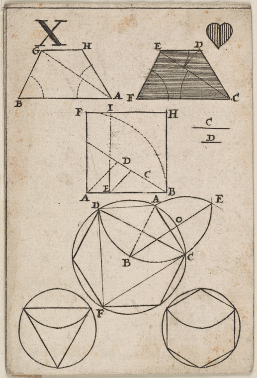
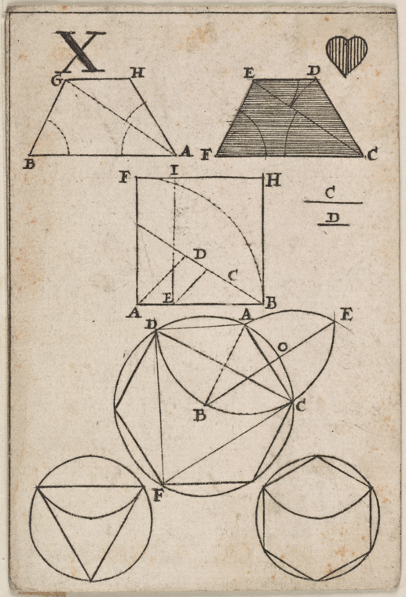


 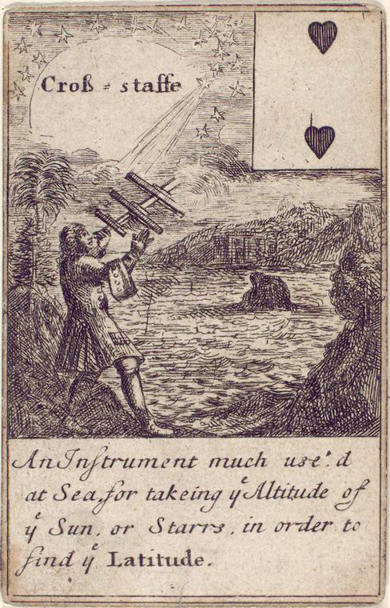
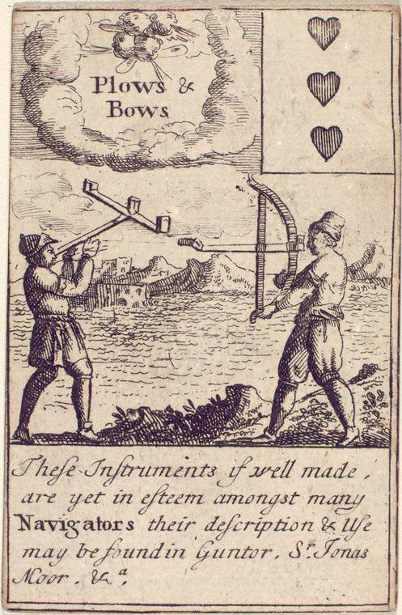
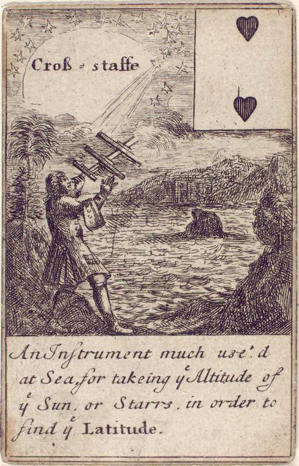
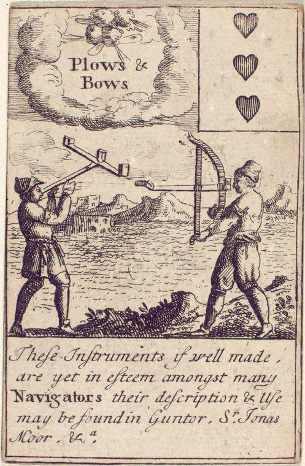

 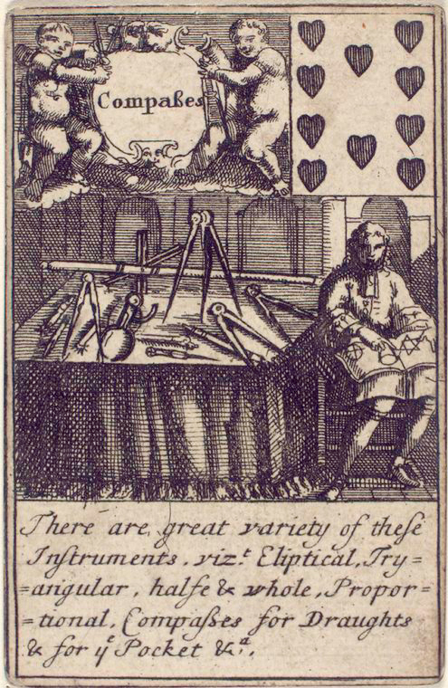
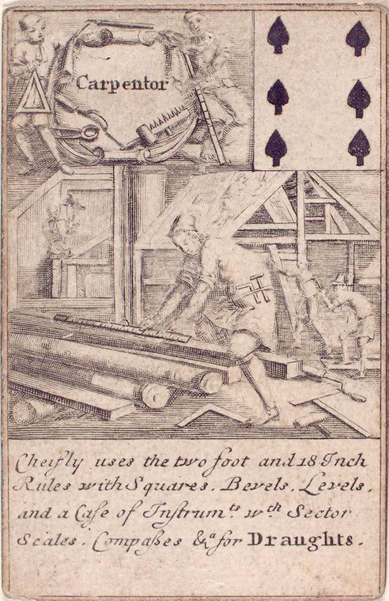
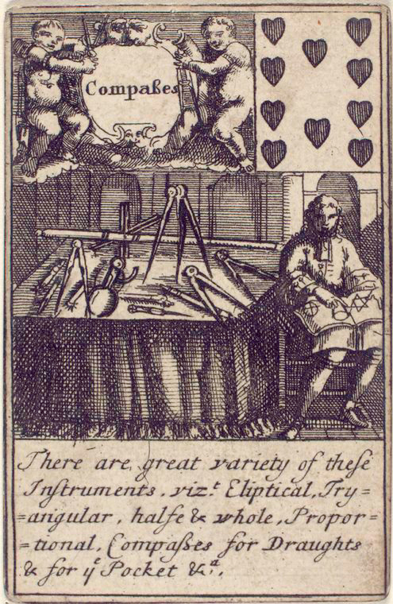
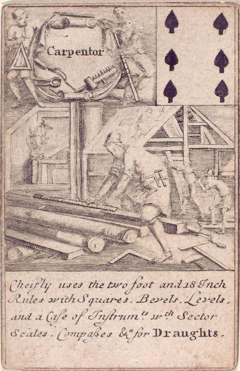


 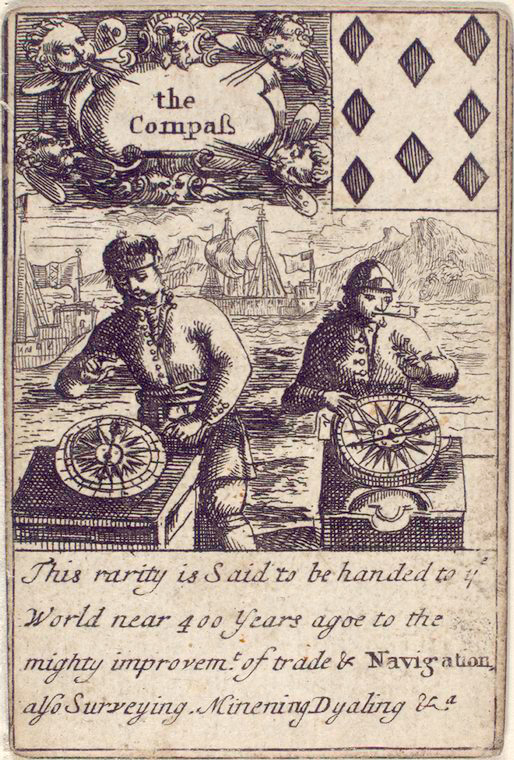
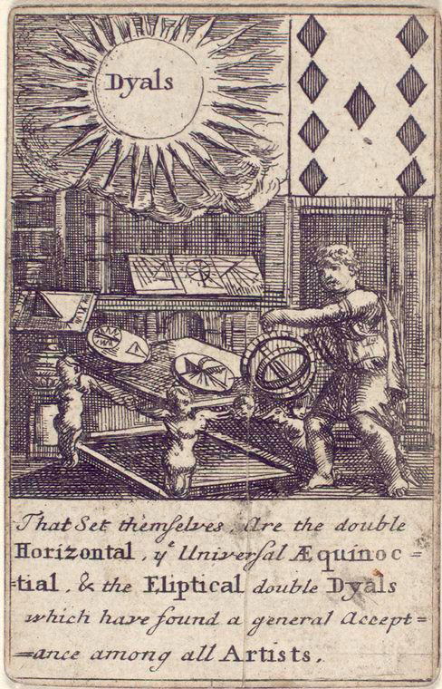
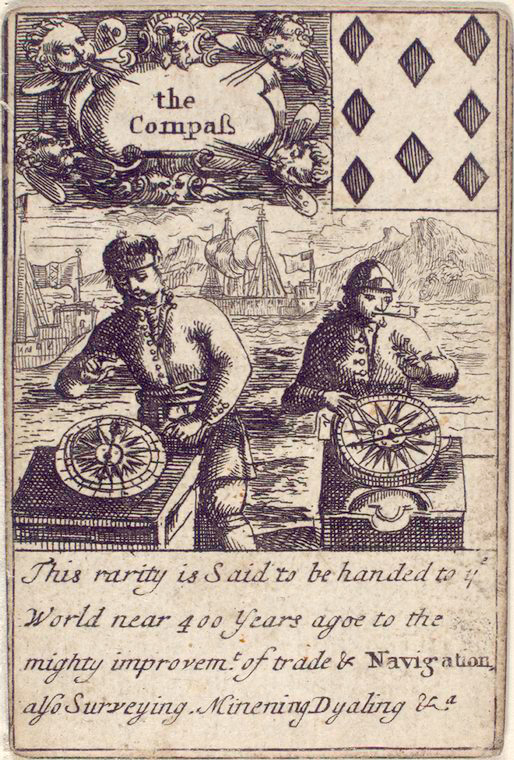
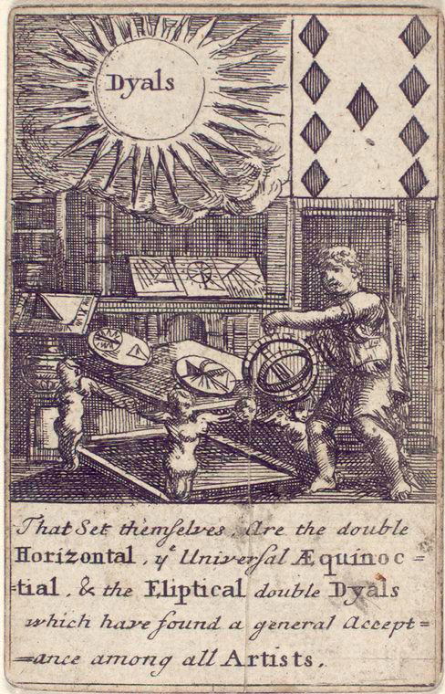
 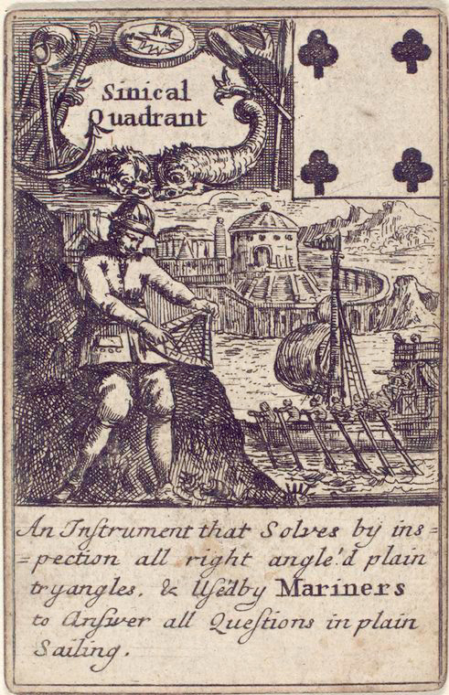
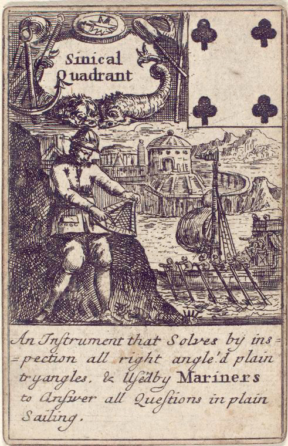
 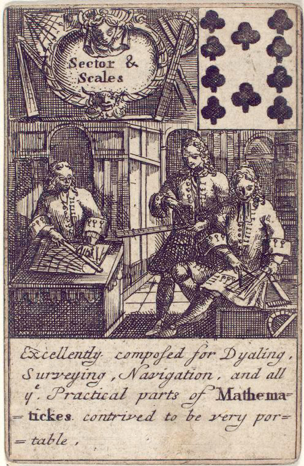
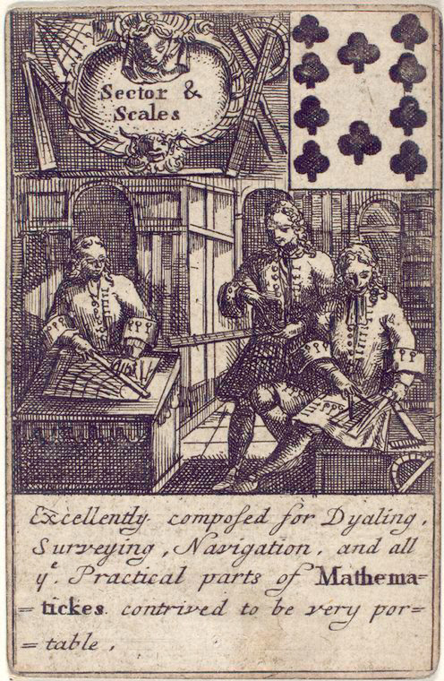